Bitvali Marché de prédictions (Projet réel en développement)
 Avril 2026
Avril 2026
 Paris
Paris
 Fondateur & Product Designer
Fondateur & Product Designer
 Figma
Figma
Contexte
Bitvali est une plateforme de marchés de prédiction pour le live streaming.
Quand un streamer lance une diffusion sur Twitch ou Kick, il crée en quelques clics un marché lié à son contenu (« Va-t-il gagner ce match ? »), et ses viewers prennent position sur l’issue, en direct, sans quitter le stream.
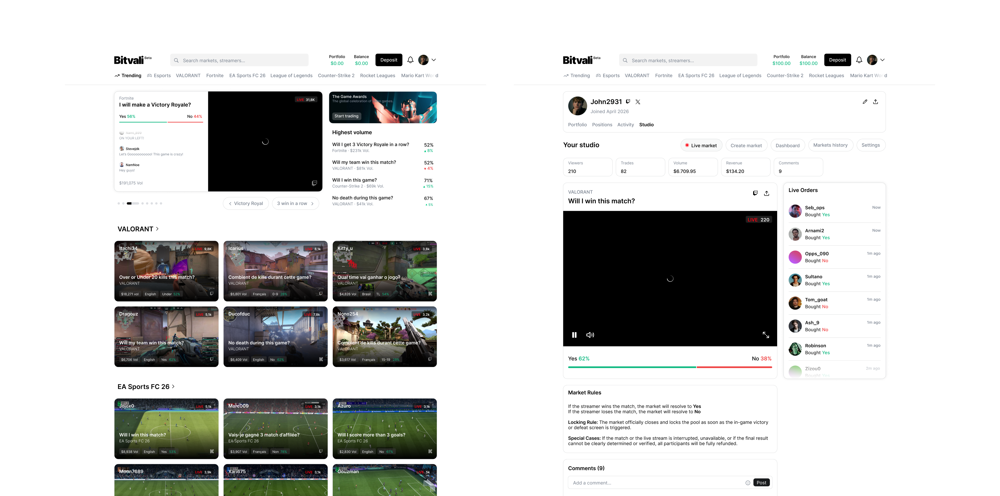
Défi
Comment réunir deux univers qui n’ont pas les mêmes codes, le divertissement du live et la lecture d’un marché financier, dans une interface qu’on comprend en quelques secondes?
Les marchés de prédiction existent déjà, mais sur leurs propres plateformes, loin du contenu qui les inspire. À l’inverse, les plateformes de streaming proposent des interactions (chat, prédictions en points de chaîne comme sur Twitch), mais sans enjeu réel ni revenus pour le créateur. Bitvali doit réunir les deux dans un même écran, ce qui crée des tensions concrètes.
Solution
Une tuile qui réunit le live et le marché.
Plutôt que de séparer la vidéo d’un côté et le marché de l’autre, j’ai fait de la tuile de marché l’élément central de l’interface. Chaque tuile condense en un seul bloc ce qu’il faut pour décider : le live qui se déroule, et les informations financières essentielles.
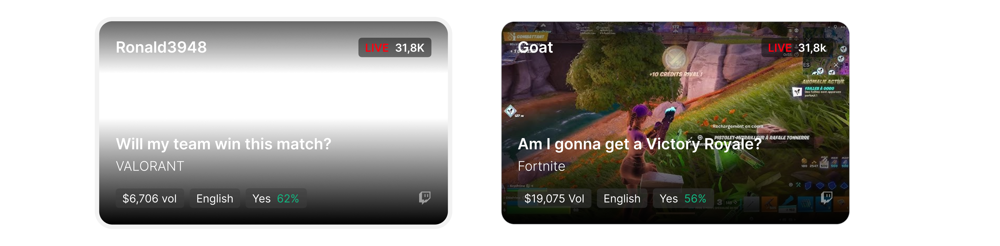
Un clic sur la tuile ouvre la page du marché, organisée en deux colonnes. À gauche, le live, les probabilités Yes / No, les règles du marché et les commentaires. À droite, la carte d’achat, qui reste visible quand on fait défiler la page : on peut miser à tout moment, sans quitter le live ni chercher le bouton. Cette approche réduit la profondeur de navigation et permet aux utilisateurs de miser vite.
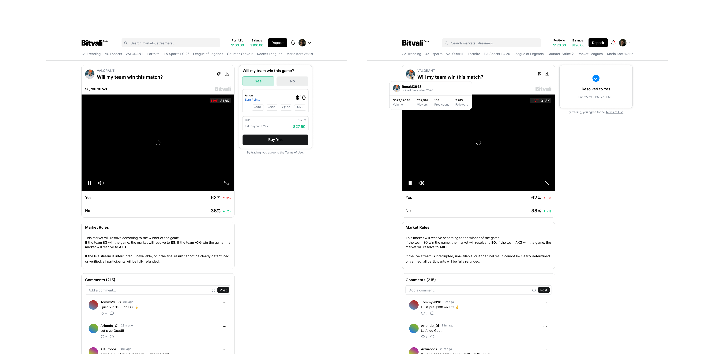
La carte d’achat change d’état en fonction de l’avancement du marché. Elle n’affiche que l’information et l’action utiles à ce moment-là.
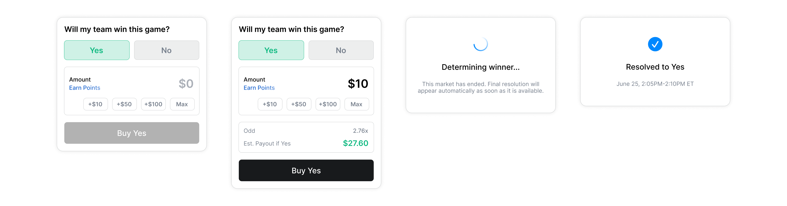
Le reste de l’expérience
Au-delà de la tuile et de la page de marché, j’ai conçu les écrans qui complètent le parcours, pour les viewers comme pour les créateurs, sur desktop et mobile.
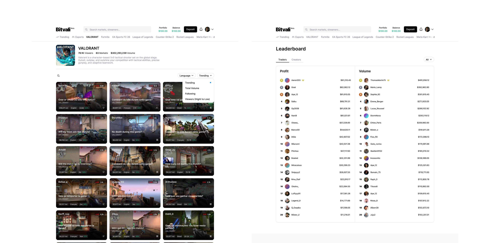
Page d’une catégorie et Leaderboard.
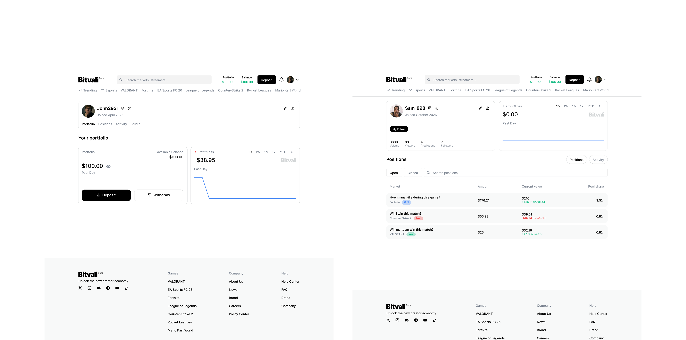
Mon portfolio et profile utilisateur (avec ses positions).
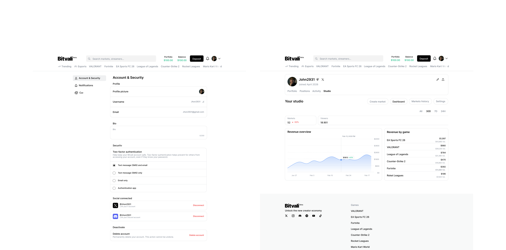
Paramètres et dashboard.
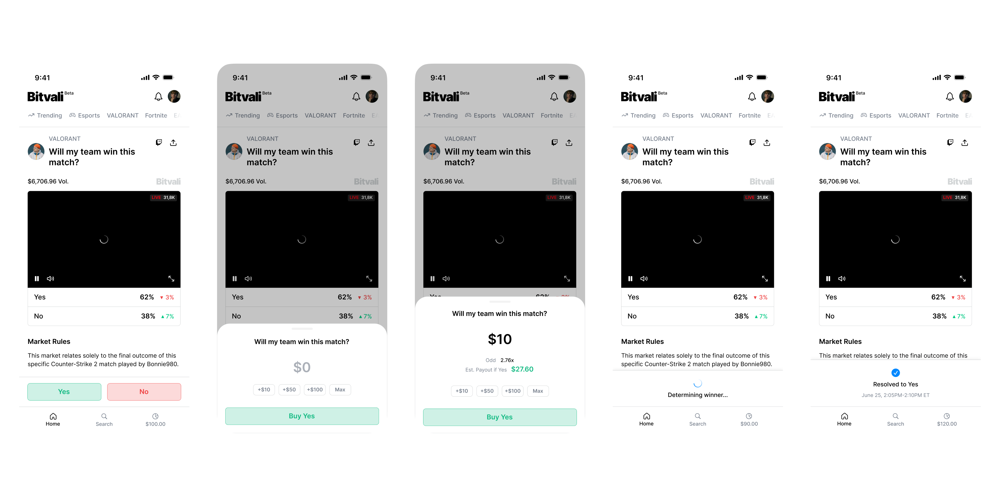
Prise de position et résolution.
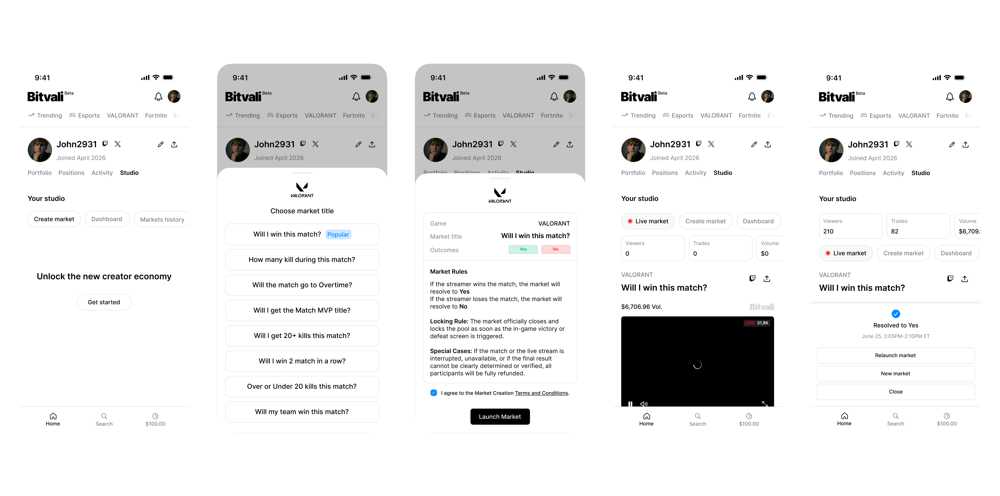
Création de marché et résolution.
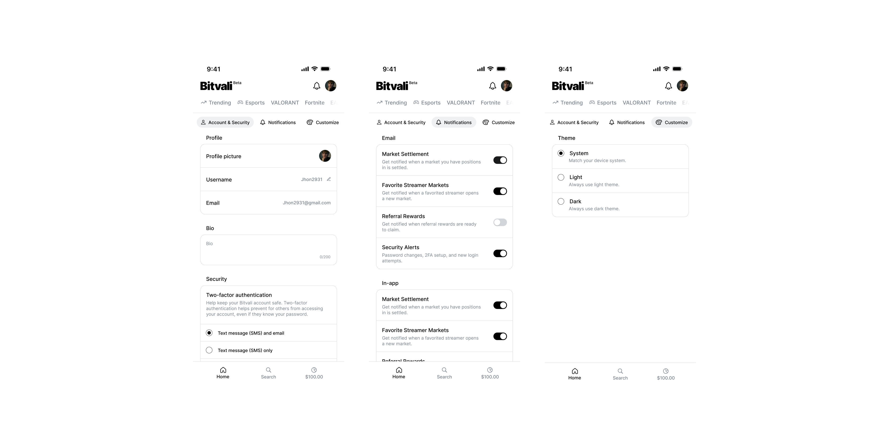
Paramètres.
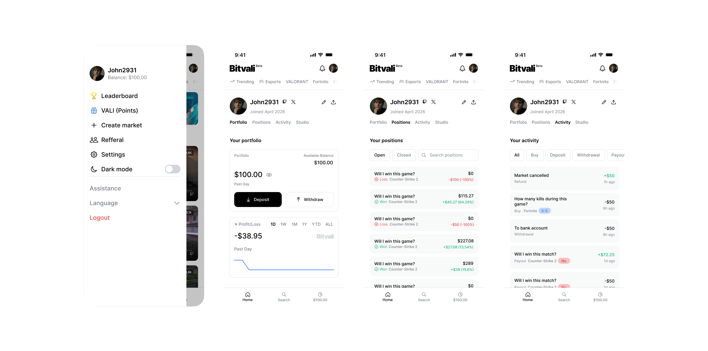
Profile.
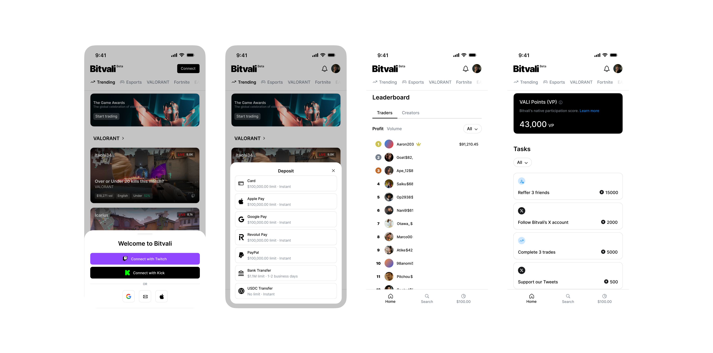
Autres screens.